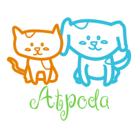

<nav class="navbar navbar-expand-md navbar-light bg-info">
    <a class="navbar-brand" routerLink="">
                    
    </a>
    <button class="navbar-toggler" type="button" data-toggle="collapse" data-target="#mainNavBar" aria-controls="navbarNav" aria-expanded="false" aria-label="Toggle navigation">
        <span class="navbar-toggler-icon navbar-dark"></span>
      </button>
      <div class="collapse navbar-collapse justify-content-between" id="mainNavBar">
        <ul class="navbar-nav" id="menuOptions">
          <li class="nav-item">
            <a class="nav-link text-white" routerLink="">Inicio <span class="sr-only">(current)</span></a>
          </li>
          <li class="nav-item">
            <a class="nav-link text-white" routerLink="acerca/5f9a3c163179491060f057be">Acerca</a>
          </li>
          <li class="nav-item">
            <a class="nav-link text-white" routerLink="anuncios/todos">Adopta</a>
          </li>
                                      
        </ul>        
          
         <form  class="form-inline">
            <button class="btn btn-success ml-2" type="button">
                <a routerLink="mi_perfil/usuario" class="text-white" *ngIf='getLogin();else LoggedOut'>Mi Perfil</a>
                <ng-template #LoggedOut>
                  <a routerLink="iniciarsesion" class="text-white">Iniciar Sesion</a>
                </ng-template>
            </button>
            <button class="btn btn-secondary ml-2" type="button">
              <a routerLink="" (click)='onLogOut()' class="text-white" *ngIf='getLogin();else crearCuenta'>Cerrar Sesion</a>
              <ng-template #crearCuenta>
                <a routerLink="crearcuenta" class="text-white">Crear Cuenta</a>
              </ng-template>
            </button>
          </form>
        
        
      </div>          
</nav>
